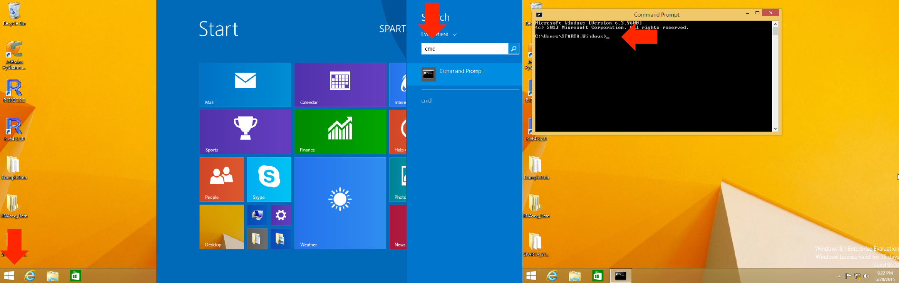
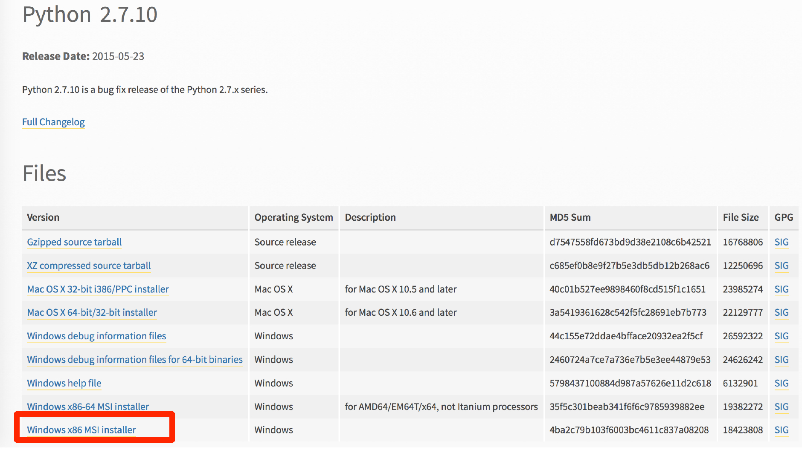
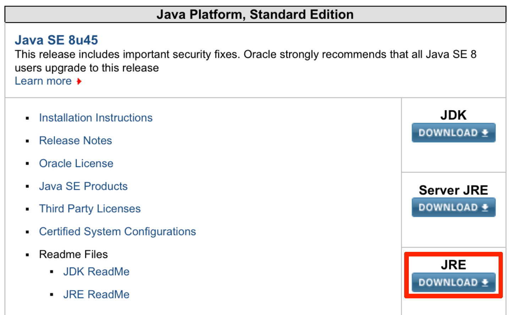
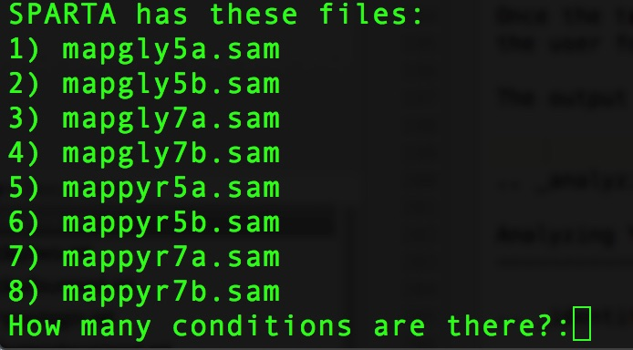
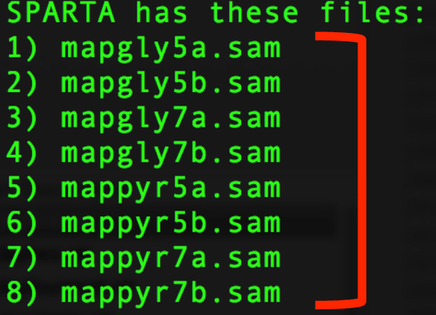
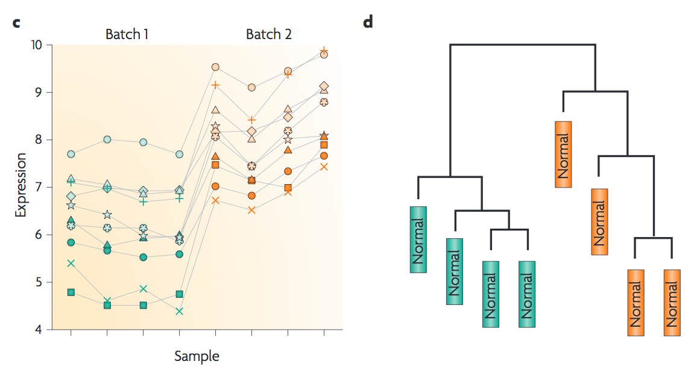
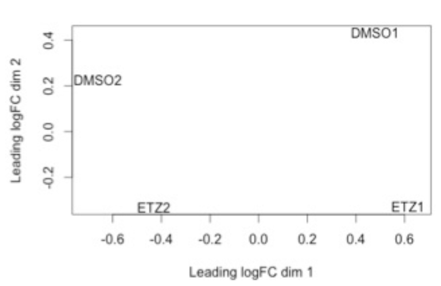

Windows tutorial¶
Download the workflow: SPARTA for Windows
- Introduction
- Basic Terminal Commands
- Install Dependencies
- Initializing SPARTA
- Analyzing Example Data
- Analyzing Your Data
- Identifying Potential Batch Effects
- Altering Workflow Execution Options
Introduction¶
Many bioinformatics software packages and workflows require the user to utilize them from the command line or terminal. SPARTA is no different. The reason the command line interface is utilized is that a great deal of power and flexibility can be gained without the use of a graphical user interface (GUI). Further, a GUI can be difficult to implement across various platforms. To find the command line interface/Terminal on Windows, go to Windows start button -> Search -> Type in: cmd -> Terminal is now open to enter commands.
Decompress the SPARTA_Windows-master.zip file by double-clicking on it. Now, drag and drop the decompressed folder onto your desktop.
SPARTA expects either compressed (.gz) or uncompressed FASTQ files (.fq or .fastq) as input, with a reference genome file in FASTA format and a genome feature file (.gtf) within the folder that contains the input data. To see an example of appropriate input data, look inside the ExampleData folder within the SPARTA_Windows-master folder.
To download a reference genome and genome feature file for your favorite bacteria, go to the Ensembl website.
Basic Terminal Commands¶
Let’s have a look at some basic Terminal commands, we will cover the commands necessary to:
1. Move through folders
2. List the contents of a folder
3. Make new folders
4. Rename files/folders
5. Delete files/folders
| Command | What it does | Examples | |
|---|---|---|---|
| 1. | cd | Change directory/folder | cd ~ (this changes to your home directory); cd .. (this goes back one folder) |
| 2. | dir | List the contents of a folder | dir |
| 3. | mkdir | Make a new directory/folder | mkdir NewFolder (this will make a new folder called ‘NewFolder’ in your current directory) |
| 4. | move | Rename or move a file from one name to another | move file1 file2 (this will rename/move file1 to file2) |
| 5. | rm | Remove a file (rmdir is the command to remove a folder) | rm file1 (remove file1); rmdir folder1 (remove folder1) |
Basic Command Prompt Commands:
x /? = provides syntax info and complete list of all parameters for x (a command, like “cd”)
cd = change directory
cd .. = move to the parent directory
cd\ = move to the root of current drive
cd x = move to the current\x directory
cd z: = change to the z root directory (as opposed to c:\)
copy x y = copy file x to directory y (Ex: D:\games\galaga.exe C:\programs[\awesome.exe]), [] = optional
copy file con = display file contents in console
copy con file.txt = create text file in the console window, end with ctrl+z (^z or F6)
date = change the date
del = delete/erase
del x = deletes all files/folders fitting x
del . = deletes all files within current directory
del *.* = deletes all files within current directory
dir = display contents of current directory (Ex: dir [c:][\programs]), [] = optional
dir *.txt = list all .txt files in current directory
dir *.? = list all files with extensions one character in length in current directory
dir /w /p *.* = display all contents one screen at a time
dir | more = display all contents one line at a time
dir /? = provides syntax info and complete list of all dir parameters
echo = send command line input to display (by default)
echo sometext >> somefile.txt = append line(s) of text to any file
echo sometext > somefile.txt = overwrites file with sometext
erase = delete/erase
exit = exit the command prompt
filename.txt = opens filename.txt in current directory in Notepad (or default .txt program)
format z: = format z drive [Ex: use to format a disc or flash drive]
mkdir x = make directory x in current directory
move x y = more or rename x to y
q = escapes sequential display of contents (i.e. the more parameter)
rd x = remove/delete directory x if it’s empty
ren x y = rename file x to y
time = change the time
type file = display the contents of the file ‘file’ (displays file contents in console)
type file |more = display the contents one line at a time
Ref. sheet from: http://blog.simplyadvanced.net/cheat-sheet-for-windows-command-prompt/
Install Dependencies¶
The SPARTA workflow requires a few things in order to run: Python, Java, NumPy, and R. If you already have these installed, great! If you don’t, let’s start by downloading the latest version of Python 2 (see image below). You will want to download and install the red boxed version of Python 2. Follow the prompts to install Python with the default values.
Great! Let’s check and see if Java is already installed on your system. Open up the terminal, (if you don’t remember how to do this, head back to the Introduction) and type:
java -version
If Java is already installed, it will produce some output that looks like this:
java version "1.8.0_31"
Java(TM) SE Runtime Environment (build 1.8.0_31-b13)
Java HotSpot(TM) 64-Bit Server VM (build 25.31-b07, mixed mode)
If the output does not look something like this, Java is likely not installed and two of the tools require Java to function (Trimmomatic and FastQC). Let’s download and install a suitable version of Java (see image below). You will want to download and install the red boxed version of Java JRE. Follow the prompts to install Java.
{kind=link}
To install the remaining dependencies, SPARTA is distributed with installers for each remaining piece of software, however, there is an ideal order with which to install them.
Navigate to the SPARTA_Windows-master folder and then into the “Software_To_Install” folder. Inside this folder is a series of executable installers. Double-click and install them in the following order:
- numpy
- vcredist
- HTSeq
- R
- gzip
Now, there is one remaining batch file called “add_python_and_R_to_path.bat”. This will add the Python, R, and gzip executables to your path so you can run them from the terminal. To execute this script, right-click on the file and then click on the option called “Run as administrator”. Windows may warn you that this script is unsafe because it is from an unknown developer. Click on the “Details” button and then click on “Run anyway”.
Note
If this script is not run, SPARTA will not function properly.
Congratulations! You’ve installed the necessary dependencies to run SPARTA!
Initializing SPARTA¶
Once SPARTA is initialized, the workflow will seek to identify that all of the necessary dependencies are met. If they are not satisfied, a message specific to what is not installed will appear as output in the terminal window.
To initialize SPARTA, go to the Terminal and navigate to the SPARTA_Windows-master folder on your desktop by typing:
cd Desktop\SPARTA_Windows-master
To start the workflow, type:
python SPARTA.py
This will start the software and check for dependencies.
Analyzing Example Data¶
SPARTA is distributed with some example data. Specifically, it is the first 100,000 reads of each sample from Baker et al..
To begin the analysis, navigate into the SPARTA_Mac-master folder and drag and drop the folder called “ExampleData” out onto the desktop.
If you haven’t already, initialize SPARTA from the Terminal.
If all the dependencies are met, SPARTA will pause and prompt the user:
Is the RNAseq data in a folder on the Desktop? (Y or N):
Type:
Y
Hit Enter/Return
Note
SPARTA assumes the data is located in a folder on the desktop by default. It is easiest if all future analyses have the data in a folder (WITHOUT SPACES IN THE NAME) on the desktop.
Now it will prompt the user for the name of the folder:
What is the name of the folder on the Desktop containing the RNAseq data?:
Type:
ExampleData
This is the name of the folder on the desktop that contains the input example data. Hit Enter/Return. From here, the software will trim, QC, align, and count transcript abundance for each sample. All output/analyses are put in a folder that SPARTA generates on the desktop called “RNAseq_Data”. Within this folder are separate folders for each SPARTA run that are denoted by the date (e.g. 2015-06-04). Within these folders are four more folders that separate each step of the analysis and are called: 1) QC, 2) Bowtie, 3) HTSeq, and 4) DEanalysis.
Once the trimming, QC, alignment, and counting are complete, SPARTA will again pause and prompt the user for how many experimental conditions exist within the analysis.
The output at this point will look like this:
{kind=link}
At the prompt that says:
How many conditions are there?:
Type:
4
Hit Enter/Return. There are 4 experimental conditions that we are considering:
- Glycerol pH 7.0
- Glycerol pH 5.7
- Pyruvate pH 7.0
- Pyruvate pH 5.7
Each condition has 2 replicates. The next prompt will read:
Enter the relevant file names, based on the names given in 'SPARTA has these files', with the replicates separated by a comma.
As an example, please see the 'conditions_input_example.txt' in the DEanalysis folder.
Once you have entered the file names, hit Enter/Return:
At this point, we need to do a few things.
- Navigate to the SPARTA output folder called RNAseq_Data located on the desktop
- Go to the current run folder (will be the last folder listed if sorted by name)
- Go into the DEanalysis folder
- Open the conditions_input.txt file in a text editor (NOT MICROSOFT WORD) such as TextEdit
The number of experimental conditions listed are based on the number entered at the prompt asking “How many conditions are there?:”. Thus, in our case, there are 4. The contents of the file will look like:
Reference_Condition_Files:
Experimental_Condition_2_Files:
Experimental_Condition_3_Files:
Experimental_Condition_4_Files:
We now need to enter the file names of the replicates in each condition. These are comma-separated file names that correspond to the output given by SPARTA (denoted with red bracket)
{kind=link}
Note
The file names are case-sensitive and must be spelled exactly as listed in the output given by SPARTA
Thus, when all the file names are inputed, the conditions_input.txt file should look like this:
Reference_Condition_Files: mapgly7a.sam, mapgly7b.sam
Experimental_Condition_2_Files:mapgly5a.sam, mapgly5b.sam
Experimental_Condition_3_Files:mappyr7a.sam, mappyr7b.sam
Experimental_Condition_4_Files:mappyr5a.sam, mappyr5b.sam
Now, save the changes by going to File -> Save. Go back to the terminal and hit Enter/Return. From here, the workflow will perform the differential gene expression analysis through edgeR. If a batch effect may be present, the output will attempt to warn the user of the potential, unintended variable that must be accounted for before drawing experimental conclusions.
All the differential gene expression output is located in the RNAseq_Data -> date of your current run -> DEanalysis folder. The file output includes:
- Differential gene expression tables
- MDS plot (somewhat analogous to a principle component analysis plot) which will show whether your replicates group together and treatment groups separate based on the treatment
- BCV plot (biological coefficient of variation) to look at gene level variation between samples
Congratulations! You’ve analyzed RNA-seq data from raw reads to differential gene expression!
Analyzing Your Data¶
If you haven’t already, we recommend working through the example data analysis first before attempting to work through your own data set to familiarize yourself with the workflow.
As stated in the Introduction, SPARTA expects either compressed (.gz) or uncompressed FASTQ files (.fq or .fastq) as input, with a reference genome file in FASTA format and a genome feature file (.gtf) within the folder that contains the input data on your desktop. To see an example of appropriate input data, look inside the ExampleData folder within the SPARTA_Windows-master folder.
Now, to analyze your own data, follow the steps to initialize SPARTA, and start the analysis!
If you would like to tweak the analysis options for a given step/tool, have a look at the Altering Workflow Execution Options.
Identifying Potential Batch Effects¶
Batch effects can be a source of variation in RNA-seq data that can confound biological conclusions. In fact, there have been documented cases of batch effects present in published studies that led readers to be concerned for the validity of the results.
To quote a previously published paper in Nature Reviews Genetics, “Batch effects are sub-groups of measurements that have qualitatively different behaviour across conditions and are unrelated to the biological or scientific variables in a study. For example, batch effects may occur if a subset of experiments was run on Monday and another set on Tuesday, if two technicians were responsible for different subsets of the experiments or if two different lots of reagents, chips or instruments were used.”
Thus, it is paramount that one address batch effects within their data before drawing biological conclusions from a specific RNA-seq experiment. To illustrate what a batch effect may look like within the data, we will utilize several different plots.
This first plot comes from the Nature Reviews Genetics paper where they examine Affymetrix data from a published bladder cancer study. You can quickly see that panels C and D from Figure 1 show that samples from batch 1 (blue) cluster together based on gene expression and samples from batch 2 (orange) cluster together.
{kind=link}
Within RNA-seq data, using SPARTA and the MDS plot generated by edgeR, another example of batch effects within a study comparing Mycobacterium tuberculosis treated with a compound, we can clearly see that the mock-treated samples (DMSO) and compound-treated samples (ETZ) separate based on batch (A vs B) instead of by treatment. Ideally, we would have the samples group together based on treatment as opposed to batch.
{kind=link}
If a potential batch effect is detected in the data set, SPARTA will output a message into the terminal that says:
IMPORTANT! YOU MAY HAVE A BATCH EFFECT! PLEASE LOOK AT THE MDS PLOT!
If this occurs, have a look at the MDS plot in the RNAseq_Data folder -> date of current run -> DEanalysis folder -> MDSplot.png
From here, you will want to adjust your model to account for the batch effect. Within edgeR, this can be accomplished through an additive linear model. The documentation for edgeR contains a tutorial on how to deal with batch effects that can be found here.
Future implementations of SPARTA will include the ability to adjust for batch effects.
Altering Workflow Execution Options¶
SPARTA is capable of allowing the user to alter the parameters associated with each analysis step to be tailored to specific use cases. Below are the different parameters that can be altered and their usage.
Options:
-h, --help show this help message and exit
--cleanup=CLEANUP Clean up the intermediate files to save space. Default
action is to retain the intermediate files. Usage:
--cleanup=True
--verbose Display more output for each step of the analysis.
--noninteractive Non-interactive mode. This is for running SPARTA
without any user input. Assumes data is on the
desktop. If this option is specified, you must fill
out the configuration file (ConfigFile.txt) with the
appropriate experimental conditions in the SPARTA
folder.
Trimmomatic options:
The order the options will be run are: ILLUMINACLIP, LEADING,
TRAILING, SLIDINGWINDOW, MINLEN
--clip=ILLUMINACLIP
ILLUMINACLIP options. MiSeq & HiSeq usually
TruSeq3.fa; GAII usually TruSeq2.fa. Default is
ILLUMINACLIP:TruSeq3-SE.fa:2:30:10. Usage:
--clip=<adapterseqs>:<seed mismatches>:<palindrome
clip threshold>:<simple clip threshold>
--lead=LEADING Set the minimun quality required to keep a base.
Default is LEADING=3. Usage: --lead=<quality>
--trail=TRAILING Set the minimum quality required to keep a base.
Default is TRAILING=3. Usage: --trail=<quality>
--slidewin=SLIDINGWINDOW
SLIDINGWINDOW options. Default is SLIDINGWINDOW:4:15.
Usage: --slidewin=<window_size>:<required_quality>
HTSeq options:
--stranded=STRANDED
Stranded options: yes, no, reverse. Default is
--stranded=reverse. Usage: --stranded=yes/no/reverse
--order=ORDER Order options: name, pos. Usage: --order=name/pos.
--minqual=MINQUAL Skip all reads with quality lower than the given
value. Default is --minqual=10. Usage:
--minqual=<value>
--idattr=IDATTR Feature ID from the GTF file to identify counts in the
output table Default is --idattr=gene_id. Usage:
--idattr=<id attribute>
--mode=MODE Mode to handle reads overlapping more than one
feature. Default is --mode=union. Usage: --mode=union
/intersection-strict/intersection-nonempty